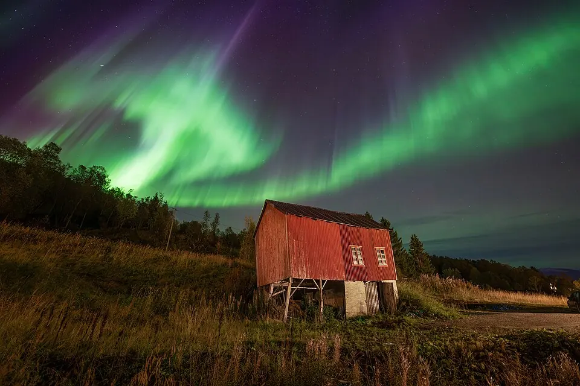

Se originalbildetNår himmelen byr på noe ekstra
Bli litt til.
Se opp.
På klare, mørke kvelder: gå ut og gi øynene litt tid. Nordlyset kan aldri loves — men ventingen under en stor nordnorsk himmel kan være en opplevelse i seg selv.
Ta på et varmt lag, demp lysene rundt dere og finn et trygt sted unna vei og glatte svaberg.